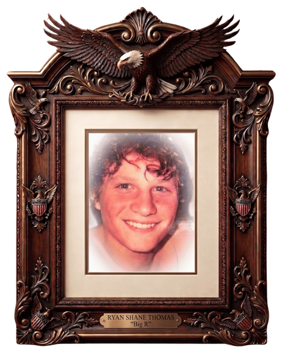
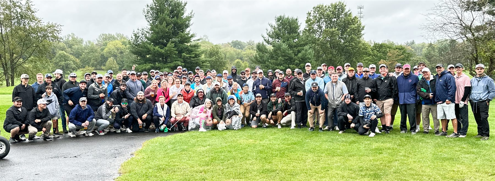
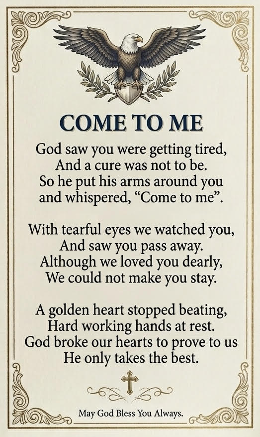

The view from his bench
Same bench, different sky every day. Take a photo of what you can see from the bench and add it for the next visitor.
What he was up against
- 1 in 400,000
- How rare Ryan's disease is. It is called MERRF, a mitochondrial disease, and there is no cure yet.
- 6 years
- From his first symptoms at age 8 to a diagnosis at 14. Every test before that came back negative.
- 27 years
- How long Ryan lived with it, from the age of 8.
Imagine a major city with half of its power plants shut down. At best such conditions would produce a brown out with large sections of the city working far below optimum efficiency. Now imagine your body working with one half of energy producing facility shut down.
The definition of a hero
Written by Ryan's uncle, Mike Mignogna, during Ryan's lifetime.
What is a hero? I know a hero as a soldier, a fireman or a surgeon. The Ancient Romans came to identify a hero as one in the face of danger and adversity, or from a position of weakness, displays courage and a will for self-sacrifice, that is heroism. Ryan to me not only makes my list, but is in every sense of the word, a hero according to the ancient Greeks.
Read Uncle Mike's full story
For those who have not had the pleasure to meet Ryan Thomas yet, I will tell you a little bit about this brave young man. Ryan's story starts on July 15th 1990, born a healthy, perfect little boy. Years later in 1997 and as Ryan enters into 2nd grade, his parents start their long journey into what no parent should have to do, they take their little boy to see a neurologist for what were his first symptoms - hand tremors. They are told it is nothing.
In 1999, now a fourth grader and full of life and trouble as all young boys are, Ryan symptoms are now progressively getting worse. His tremors are the same, but is now experiencing a bit of unbalanceness in his walk. At this point, he is taken to Children's Hospital of Pennsylvania (CHOP) every 6 months for blood work. All result of which came up negative for every common and rare disease.
In the year 2000, Ryan is now having difficulty walking which results in him tripping and falling. His body is showing signs of fatigue and tiredness, which resulted in frequent seizures. At this point Ryan is no longer able to walk and required a badass scooter to get around. The following years only are filled with testing, poking, prodding and trips to several doctors and specialists with only dead ends and no answers.
In 2004, CHOP called and requested to see Bob and Leigh (Ryan's parents) without Ryan. They are told they have a diagnosis, it is a mitochondrial disease known as Myoclonic Epilepsy with Ragged Red Fibers, aka MERRF. The disease is extremely rare, believed to affect only 1/400,000, but CHOP is not able to give any more details about the disease or what Ryan's future would be.
In 2005, Ryan was hospitalized at CHOP as a result of a simple cold. One of the results of this cold was back to back seizures. He was placed on anti-seizure medication, but the cold would not go away and Ryan grew weaker and weaker. The seizures continued and were becoming more violent, eventually causing Optic Atrophy. As a result Ryan can only see from a small part of his right eye.
In 2007, Ryan is plagued with another cold which turns life threatening. He enters CHOP in January and is not released until May. During his stay he developed many complications, was intubated 4 times and also developed pancreatitis. The only way to get Ryan home would be to have a tracheotomy to assist in his breathing, and a gastric tube put in place for eating, forever changing Ryan's life.
Ryan is now home surrounded by his loving family and friends and is always willing to give a smile to anyone. But for me, his Uncle, he makes me work for it.
With every life's struggle there are challenges. For the Thomas', it's just their way of life - it is just what they do, and there isn't anything they wouldn't do for Ryan. What you won't find are excuses, pity or selfishness, they don't ask for help, they just do what needs to be done. That is why I am asking for your help in raising money for a great cause and hopefully one day our contribution will provide the ultimate relief, a cure for all mitochondrial diseases.
Thank you!
Photos of Ryan
Every year, friends and family fill The Bucks Club in Jamison, Pennsylvania, for the Big R Memorial Golf Outing. The money raised goes to mitochondrial disease research, so that one day there is a cure.

Come to Me

Now you know him
Tell someone about Big R. If you have a story or a photo of Ryan, his family keeps a memory wall and would love to add yours.